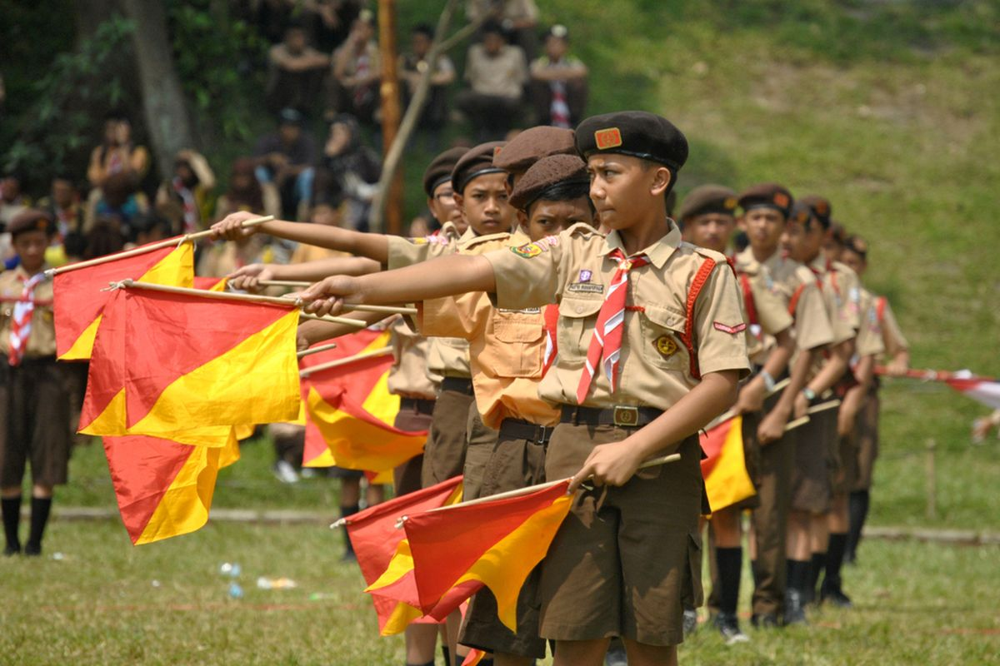

.png)
 copy.png)

Sejarah Pramuka Indonesia Scouting yang di kenal di Indonesia dikenal dengan istilah Kepramukaan, dikembangkan oleh Lord Baden Powell sebagai cara membina kaum muda di Inggris yang terlibat dalam kekerasan dan tindak kejahatan, beliau menerapkan scouting secara intensif kepada 21 orang pemuda dengan berkemah di pulau Brownsea selama 8 hari pada tahun 1907. Pengalaman keberhasilan Baden Powell sebelum dan sesudah perkemahan di Brownsea ditulis dalam buku yang berjudul “Scouting for Boy”. Melalui buku “Scouting for Boy” itulah kepanduan berkembang termasuk di Indonesia. Pada kurun waktu tahun 1950-1960 organisasi kepanduan tumbuh semakin banyak jumlah dan ragamnya, bahkan diantaranya merupakan organisasi kepanduan yang berafiliasi pada partai politik, tentunya hal itu menyalahi prinsip dasar dan metode kepanduan. Keberadaan kepanduan seperti ini dinilai tidak efektif dan tidak dapat mengimbangi perkembangan jaman serta kurang bermanfaat dalam mendukung pembangunan Bangsa dan pembangunan generasi muda yang melestarikan persatuan dan kesatuan Bangsa. Memperhatikan keadaan yang demikian itu dan atas dorongan para tokoh kepanduan saat itu, serta bertolak dari ketetapan MPRS No. II/MPRS/1960, Presiden Soekarno selaku mandataris MPRS pada tanggal 9 maret 1961 memberikan amanat kepada pimpinan Pandu di Istana Merdeka. Beliau merasa berkewajiban melaksanakan amanat MPRS, untuk lebih mengefektifkan organisasi kepanduan sebagai satu komponen bangsa yang potensial dalam pembangunan bangsa dan negara. Oleh karena itu beliau menyatakan pembubaran organsiasi kepanduan di Indonesia dan meleburnya ke dalam suatu organisasi gerakan pendidikan kepanduan yang tunggal bernama GERAKAN PRAMUKA yang diberi tugas melaksanakan pendidikan kepanduan kepada anak-anak dan pemuda Indoneisa. Gerakan Pramuka dengan lambang TUNAS KELAPA di bentuk dengan Keputusan Presiden Republik Indonesia Nomor 238 Tahun 1961, tanggal 20 Mei 1961. Meskipun Gearakan Pramuka keberadaannya ditetapkan dengan Keputusan Presiden Republik Indonesia Nomor 238 tahun 1961, namun secara resmi Gerakan Pramuka diperkenalkan kepada khalayak pada tanggal 14 Agustus 1961 sesaat setelah Presiden Republik Indonesia menganugrahkan Panji Gerakan Pramuka dengan Keputusan Presiden Republik Indonesia Nomor 448 Tahun 1961. Sejak itulah maka tanggal 14 Agustus dijadikan sebagai Hari Ulang Tahun Gerakan Pramuka. Perkembangan Gerakan Pramuka mengalami pasang surut dan pada kurun waktu tertentu kurang dirasakan pentingnya oleh kaum muda, akibatnya pewarisan nilai-nilai yang terkandung dalam falsafah Pancasila dalam pembentukan kepribadian kaum muda yang merupakan inti dari pendidikan kepramukaan tidak optimal. Menyadari hal tersebut maka pada peringatan Hari Ulang Tahun Gerakan Pramuka ke-45 Tahun 2006, Presiden Republik Indonesia Susilo Bambang Yudhoyono mencanangkan Revitalisasi Gerakan Pramuka. Pelaksanaan Revitalisasi Gerakan Pramuka yang antara lain dalam upaya pemantapan organisasi Gerakan Pramuka telah menghasilkan terbitnya Undang-Undang Nomor 12 Tahun 2010 tentang GERAKAN PRAMUKA.